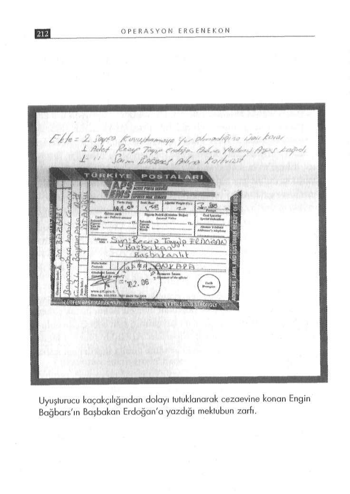

G İ Z L İ B E L G E L E R D E K A R A N L I K İ L İ Ş K İ L E R
parslan Arslan'ın Doğuş Factoring'in avukatlığını yaptığı, şirke
Yaprak, Sezen Çekelkıran, Abdülkadir Çelik, M. Tanış, Muzaftin yönetim kurulu başkanı olan Ahmet Çekelkıran'ın bütün bu fer Tekin'dir. Ayhan Parlak, İlhan Parlak ve Hasan Parlak sık gayri meşru işlerden bilgisinin olduğu, Ayhan Parlak tarafından sık şirketlere gelirdi. Ertuğrul Yılmaz uyuşturucu ticaretinden elbildiği konularla ilgili olarak herhangi bir yasal merciye başvurde ettiği parayı illegal yollardan ülkemize getirir, Doğuş Factomaması konusunda tehdit edildiği şeklinde istihbarî mahiyette ring aracılığıyla aklanırdı. Bu şekilde yaklaşık 38 trilyon lira kabilgiler derlenmiştir."
ra para factoring yöntemiyle aklandı. Ertuğrul Yılmaz'ın öldürül
Bu rapor, Doğuş Factoring olayına yeni bir boyut kazandırmesinden sonra Ayhan Parlak şirketin başına geçti. Şirketler mıştır. Muzaffer Tekin ifadesinde sembolik olarak şirkete hisseresmi kayıtlarda faal görünmesine rağmen hepsi kapatıldı. Ertuğdar olduğunu ve Arslan'ın bu şirkete avukatlık yaptığından harul Yılmaz'ın imam nikâhlı eşi Nezahat Keleş şirketin tüm malberdar olmadığını söylemesi ne kadar akla yatkındır, tartışılır.
varlıklarını ve gayrimenkullerini etrafındaki adamlarla birlikte Burada önemli olan bir başka nokta, ulusalcı akımın uyuşturucu meşru ve gayrimeşru yollardan kendi adına toplamaya başladı.
trafiğinde bulunan bir şirketin içinden geçmesi ve türban yüzün
Bu dönem içerisinde üzerime kayıtlı bulunan gayrimenkulle-den Danıştay saldırısını düzenlediğini iddia eden Arslan'ın ajanrin tamamını Nezahat Keleş'e devrettim. Damadım Aydoğan dasına kayıtlı çok özel bilgileri açıklamaması için Ayhan Parlak Karaman kaçırılarak alıkonunca eşim Meliha Dereoğlu adına tarafından tehdit edildiği iddiasıdır. Ayrıca, şirket hissedarların
Ataşehir'de bulunan evi avukat Alparslan Arslan'a vekâlet vedan Ertuğrul Yılmaz'ın uyuşturucu paralarını imam nikâhlı eşi rerek Nezahat Keleş'e devrettim. Ayhan Parlak ve İlhan Parlak üzerinden kaçırmaya çalıştığı için öldürüldüğü iddiasına bakar
ölümle tehdit ederek 160 milyar liramı gasp ettiler."
sak, Doğuş Factoring etrafındaki kümelenmenin garip koordinatları daha da karmaşık hâle geliyor.
Çekelkıran'ın tehditle gayrimenkulleri ve parasının gasp edildiği iddiaları ne derece doğrudur ayrı bir konu, ancak şirket Nitekim şirketin Yönetim Kurulu Başkanı Ahmet Çekelkıortakları arasındaki mal ve para kavgasının tam göbeğinde buluran'ın 30 Haziran 2006 tarihli İstanbul Emniyeti'ne yaptığı şikanan Danıştay Davası sanığı Alparslan Arslan'ın avukat olarak yet başvurusu da bu durumu gösteriyor.
bu sürece nasıl müdahil olduğu ve içine girdiği ilişkiler ağı izaha Çekelkıran emniyetteki ifadesinde; Ertuğrul Yılmaz'ın 1998
muhtaçtır.
yılında Ankara'da banker Yalçın Doğan'ın öldürülmesi olayının faili olarak aranması nedeniyle Almanya'ya kaçtığını, Yılmaz'ın AK Parti'ye darbe yapılacak!
Almanya'dan gönderdiği parayla 1999 yılında bu şirketin kurul
Uyuşturucu kaçakçılığından dolayı 1 Ocak 2006 günü tutukduğunu, kendisinin yüzde 25, Ertuğrul Yılmaz'ın da yüzde 75 hislanarak Tekirdağ Cezaevi'ne konan Engin Bağbars, İstanbul sedar olduğunu anlattı.
Cumhuriyet Savcılığı'na dilekçe vererek Ümraniye soruşturma
Çekelkıran, Ertuğrul Yılmaz'ın talimatları doğrultusunda zası kapsamında görüşlerine başvurulmasını istedi. Savcı Zekeriya man içinde Doğuş Factoring ve bağlı şirketlerin ortaklık yapısı
Öz, 1 Ekim 2007 günü Bağbars'ı "tanık" sıfatıyla dinledi. İddianın değiştiğini anlatırken şöyle dedi: ları, "yenir, yutulur" cinsten değildi:
"Kurulan diğer şirketlerin ortakları Müzeyyen Keleş, Nezahat
"Bu suçtan önce ben İstanbul Jandarma İl Komutanlığı'nın ha
Keleş, Mehmet Okan Yılmaz, Rıza Yılmaz, Uğur Yılmaz, Tamer ber elemanıydım. Süreyya başçavuş isimli şahısla görüşüyordum.

G İ Z L İ B E L G E L E R D E K A R A N L I K İ L İ Ş K İ L E R
Hakan Mutlu isimli Üsküdar'ın emniyet müdür yardımcısı olan şahıs kendisini istihbaratçı olarak tanıtıp beni yanına çağırdı. Haberi daha önceden tanıdığım Gökhan Başoğlu ile gönderdi.
- Gökhan Başoğlu, İrfan, Fadıl gibi şahıslarla Hakan Mutlu'nun yanına gittik. Bana uyuşturucu konusunda yardımcı olmamı söyledi.
- Bu arada Hakan Mutlu 10-15 tane silah gösterdi ve bana almamı söyledi. Bu olay 2005 yılının 11. ayında oldu. Bu olaydan 15 gün sonra evim soyuldu. Daha önce hırsızlık yapmış şahıslardan aldığım Glock marka tabancam evimden alındı.
- Hakan Mutlu ile tanıştıktan sonra Muzaffer Tekin'le tanıştıracaklarını söylediler. Ben, Gökhan ve İrfan, Tekin'in Fenerbahçe'deki ofisine gittik. Gökhan, benim cezaevinde yattığımı, daha önce jandarmada çalıştığımı, şimdi kendilerine yardımcı olduğumu söyledi. Tekin memnun oldu, yanına gidip gelmemi söyledi.
- Gökhan ve İrfan kendilerini 'derin devlet' olarak tanıtıyordu, Tekin'e de 'komutanım' diyorlardı.
- Daha sonra tutuklandım. Tutuklandıktan sonra da 10.02.2006 tarihinde başbakana bir mektup yazdım. AK Parti'ye karşı bir darbe yapılacağını, beni kullanmak istediklerini, bu konuları anlatmak istediğimi söyledim. Bunun üzerine cezaevinde beni tehdit etmeye başladılar.
- Danıştay saldırısından bir gün sonra başbakana yazdığım mektupla alakalı olarak 18.05.2006 tarihinde savcılıkça ifadem alındı. Bir hafta sonra Tekirdağ savcısı cezaevine geldi. İfadedeki bazı olayların tarihlerinin tutarlı olduğunu, bu sebeple ek ifade verip vermeyeceğimi sordu. İstihbarat da gelecek, kameraya alınacak' dedi. Ben de kabul ettim. Orada da 20 sayfalık ifade verdim. Orada birçok konu ve Muzaffer Tekin konusunu anlattım. Hakan Mutlu konusunu anlattım. Daha sonra Hakan Mutlu tutuklandı, Atabeyler ve Sauna Çeteleri ortaya çıkarıldı.